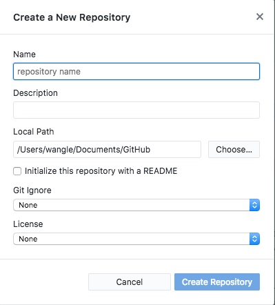
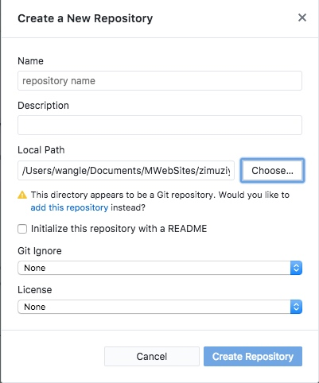
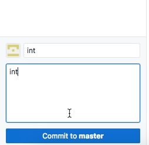

1.如何让github 与 本地文件夹同步，在不采用的命令行push 的情况下
由于之前是在 terminal中，用命令行的方式写入文件和代码，以及push到github仓库，所以并不能利用github desktop来方便地管理，尤其是对于我这样的代码新手来说；
在下载了GitHub desktop之后，在从网页端克隆到本地的时候，在本地新生成了一个文件夹，目前要解决的就是令网页端和本地文件夹的同步问题。
解决方案很简单：
在desktop中左上角新建存储库，选择Mweb输出的文件夹，然后会生成警告，点击‘add this repository’即可。


2.发布时需要填写commit，才可以发布，不然没有push的选项
